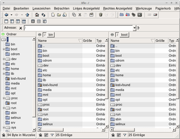
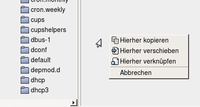
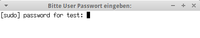
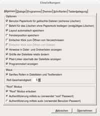
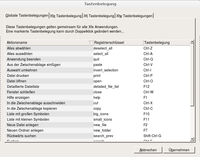

XFE
Dieser Artikel wurde für die folgenden Ubuntu-Versionen getestet:
Ubuntu 14.04 Trusty Tahr
Zum Verständnis dieses Artikels sind folgende Seiten hilfreich:
 XFE
XFE  ist ein grafischer Dateimanager, der seit 2002 von Roland Baudin entwickelt wird und besonders durch einen extrem niedrigen Ressourcenverbrauch glänzt. Das Hauptziel der Entwicklung beruht nach Aussagen des Entwicklers auf Leichtgewichtigkeit und extremer Ressourcenschonung für die Nutzung unter schlanken Desktopoberflächen oder älterer Hardware, ferner auf Vermeidung von Abhängigkeiten, so dass der Dateimanager auch aus dem Terminal in Bruchteilen von Sekunden gestartet werden können soll.
ist ein grafischer Dateimanager, der seit 2002 von Roland Baudin entwickelt wird und besonders durch einen extrem niedrigen Ressourcenverbrauch glänzt. Das Hauptziel der Entwicklung beruht nach Aussagen des Entwicklers auf Leichtgewichtigkeit und extremer Ressourcenschonung für die Nutzung unter schlanken Desktopoberflächen oder älterer Hardware, ferner auf Vermeidung von Abhängigkeiten, so dass der Dateimanager auch aus dem Terminal in Bruchteilen von Sekunden gestartet werden können soll.
XFE basiert lediglich auf der FOX Bibliothek, um voll funktionstüchtig zu sein. Auswahl der wichtigsten Programmfunktionen:
|  |
| Programmoberfläche |
Sehr schnelle grafische Oberfläche und geringer Speicherbedarf
UTF-8 Unterstützung (durch FOX Bibliothek)
Vier Ansichtsoptionen mit auswählbarem Verzeichnisbaum und bis zu zwei geteilten Verzeichnisfeldern
Integrierte Unterprogramme:
Textbetrachter (X File View, xfv)
Editor (X File Write, xfw)
Bildbetrachter (X File Image, xfi) sowie
RPM- oder DEB-Paketbetrachter/Installer/Uninstaller (X File Package, xfp)
Drag'n'Drop innerhalb von XFE sowie von und zu der verwendeten Desktop-Oberfläche
Rückgängig- und Wiederherstellen-Historie für Verzeichnisnavigation
Archivmanager (.tar, .Z, .zip, .gzip, .bzip2, .xz, .7z; Extraktion von .lzh, .rar, .ace, .arj)
Optische Anpassung durch Designs (Themes) für GNOME, KDE, Xfce und Windows
Vorschaubilder und Lesezeichen
Kurzinfos (Tooltips) mit Dateieigenschaften
Doppelklick- und Einzelklickmodus, Kontextmenüs
Zahlreiche konfigurierbare Tastenkürzel
Root-Modus (Systemadministration)
Verfügbarkeit in 19 Sprachen und vieles mehr ...
Installation¶
Das Programm kann über das folgende Paket installiert werden [1]:
xfe (universe)
 mit apturl
mit apturl
Paketliste zum Kopieren:
sudo apt-get install xfe
sudo aptitude install xfe
Das Programm ist anschließend unter den verschiedenen Desktop-Oberflächen im Bereich "System" bzw. "Systemwerkzeuge" der jeweiligen Hauptmenüs erreichbar.
Ansichten¶
Das Ansichtsfenster ist in zwei Bereiche gegliedert:
Leistenbereich¶
Der oben liegende Leistenbereich stellt eine Werkzeug-, Ansichts- und Adressleiste zur Verfügung. Mit ihr lassen sich z.B. weitere Instanzen von XFE starten, Befehle ausführen, ein Terminal starten, die Ansichtsoptionen des Hauptfensters festlegen, die Ansichtsoptionen für die Ordner auswählen (Symbol-, Listen- und Detailansicht) usw. Die Adressleiste dient zur manuellen Adresseingabe und zeigt immer die Adresse des gerade fokussierten Teils des Hauptfensters an.
Hauptfenster¶
Im Hauptfenster lassen sich je nach gewählter Ansichtsoption ein Verzeichnisbaum, sowie bis zu zwei Verzeichnisfelder anzeigen. Im oberen Teil eines jeden Verzeichnisfeldes ist eine "Brotkrumen-Navigation" integriert. Unten ist jeweils eine Statusleiste mit Hilfsknöpfen wie "Versteckte Dateien anzeigen", "Thumbnails verstecken" und einer Filteroption verfügbar.
Über den Verzeichnisbaum erfolgt auch die Verwaltung externer Datenträger wie z.B. USB-Sticks. Zum Aushängen dient ein per Rechtsklick  zugängliches Kontextmenü, welches einen Eintrag "Laufwerk trennen" bereitstellt. Über dieses Kontextmenü sind im gesamten Hauptfenster auch alle weiteren üblichen Dateioperationen wie "Kopieren", "Umbenennen", die Erstellung von Archiven und vieles mehr zugänglich.
zugängliches Kontextmenü, welches einen Eintrag "Laufwerk trennen" bereitstellt. Über dieses Kontextmenü sind im gesamten Hauptfenster auch alle weiteren üblichen Dateioperationen wie "Kopieren", "Umbenennen", die Erstellung von Archiven und vieles mehr zugänglich.
Bedienung¶
Die Bedienung hält sich im Wesentlichen an die grundsätzlich von grafischen Dateimanagern gewohnten Konventionen, bietet jedoch einige Besonderheiten, die sich aber im Verlaufe der Benutzung rasch erschließen.
|  |
| Dateiaktionen-Kontextmenu |
Dateiaktionen im Zweifenstermodus¶
Aktionen wie Verschieben und Kopieren von Dateien lassen sich mit der linken Maustaste  per Drag'n'Drop bewerkstelligen. Hierbei erscheint am Ende der Aktion ein kleines Kontextmenü mit der Auswahlmöglichkeit, ob die Datei in den Zielordner kopiert, verschoben oder verknüpft werden soll.
per Drag'n'Drop bewerkstelligen. Hierbei erscheint am Ende der Aktion ein kleines Kontextmenü mit der Auswahlmöglichkeit, ob die Datei in den Zielordner kopiert, verschoben oder verknüpft werden soll.
Lesezeichen¶
Über das Menü "Lesezeichen -> Lesezeichen setzen" kann der gerade im Hauptfenster fokussierte Ordner als Lesezeichen übernommen werden. Dieses neue Lesezeichen ist dann künftig über das selbe Menü direkt erreichbar.
Zugriffsrechte und Verknüpfungen von Dateien¶
Um Zugriffsrechte von Dateien in XFE detailliert einsehen und ändern zu können, dient der Reiter "Berechtigungen" unter dem Kontextmenüeintrag "Eigenschaften" jeder Datei bzw. jedes Ordners. Für die Festlegung von Dateiverknüpfungen ist der Eigenschaften-Reiter "Dateiverbindungen" zuständig.
Root-Modus¶
|  |
| Root-Modus |
Aus XFE heraus lässt sich bei Bedarf über Menü "Werkzeuge -> Neues 'root' Fenster" (alternativ
⇧ +
F2 ) eine Instanz mit Administratorrechten öffnen. Hierzu muss zuvor im Einstellungsdialog (Menü "Bearbeiten -> Einstellungen", Reiter "Allgemein") festgelegt werden, ob die hierzu nötige Authentifizierung mittels su-Befehl (unter Verwendung des "root"-Passworts) oder mittels sudo-Befehl (unter Verwendung des Benutzer-Passworts) erfolgen soll. Wie allgemein empfohlen wird, sollte auf der grafischen Oberfläche von XFE der Root-Modus mittels sudo-Befehl bevorzugt werden (weitere Informationen in den entsprechenden Abschnitten der Wiki-Artikel sudo und Dateimanager). Der Root-Modus kann auf Wunsch auch komplett deaktiviert werden.
Einstellungen¶
|  |
| Einstellungsdialog |
Unter "Bearbeiten -> Einstellungen" lassen sich die Einstellungen des Dateimanagers ändern. Im Reiter "Allgemein" kann man zum Beispiel festlegen:
Einzel- oder Doppelklick zum Öffnen von Dateien oder Verzeichnissen
Speichern des aktuellen Layouts
Speichern der Fensterposition
Papierkorb zum sicheren Löschen bereitstellen
Bereitstellen eines endgültigen Löschbefehls
Scrollgeschwindigkeit der Maus
Das Erlauben des "Root"-Modus
und mehr
Im den weiteren Reitern lassen sich zum Beispiel die mit den Funktionen des Dateimanagers verknüpften externen Programme, das für die Darstellung zu verwendende Design, Schriftarten und vieles mehr definieren.
Tastenkürzel¶
|  |
| Tastenbelegungen |
Im Reiter "Tastenbelegung" des unter "Bearbeiten -> Einstellungen" erreichbaren Einstellungsdialogs lassen sich die voreingestellten Tastenkürzel einsehen. Diese liegen in großer Zahl als globale sowie als für die einzelnen Unterprogramme Xfe (X File Explorer), Xfi (X File Image) und Xfw (X File Write) definierte Festlegungen vor. Die Tastenkürzel können per Doppelklick geändert und somit an die eigenen Bedürfnisse angepasst werden.
Problembehebung¶
Programmabstürze bei Verwendung diverser Kontextmenüs¶
Seit 13.04 (XFE-Version 1.32.5) kann das Aufrufen einiger Einträge per Rechtsklick zu erreichbaren Kontextmenüs, wie zum Beispiel der Dateieigenschaften oder des Eintrags "Öffnen mit...", zu reproduzierbaren Programmabstürzen (u.a. bei Lubuntu) führen. Dieser Fehler im Zusammenhang mit IBus ist bekannt. Als provisorische Lösung wird vorgeschlagen, das Programm mit der Option:
xfe -im nothing
zu starten, wodurch die volle Funktionalität wieder hergestellt wird. Alternativ kann ein Tipp aus dem Forum weiterhelfen.
 im LinuxWiki
im LinuxWiki Übersichtsartikel
Übersichtsartikel- Erstellt mit Inyoka
-
 2004 – 2017 ubuntuusers.de • Einige Rechte vorbehalten
2004 – 2017 ubuntuusers.de • Einige Rechte vorbehalten
Lizenz • Kontakt • Datenschutz • Impressum • Serverstatus -
Serverhousing gespendet von